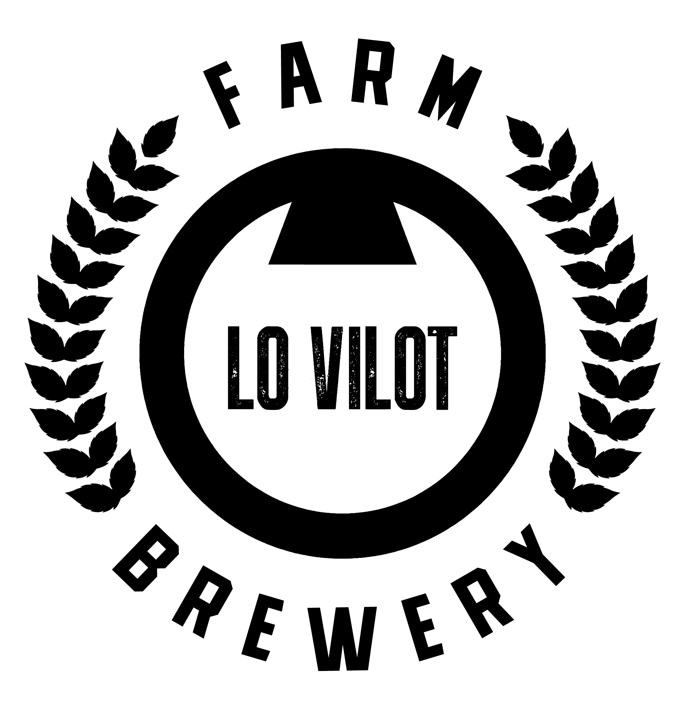

{{ t.welcomeBody }}
{{ t.welcomeVilot }}
{{ t.homeSub }}
{{ t.vilotDesc }}
{{ t.homeFoot }}
{{ failsLabel }}
{{ t.failBody }}
{{ winBody }}
{{ winFact }}
{{ t.bonusSub }}
{{ t.boardBody }}
{{ t.source }}
{{ t.zoomHint }}
{{ t.regBody }}
{{ regErr }}
{{ t.regWarn }}